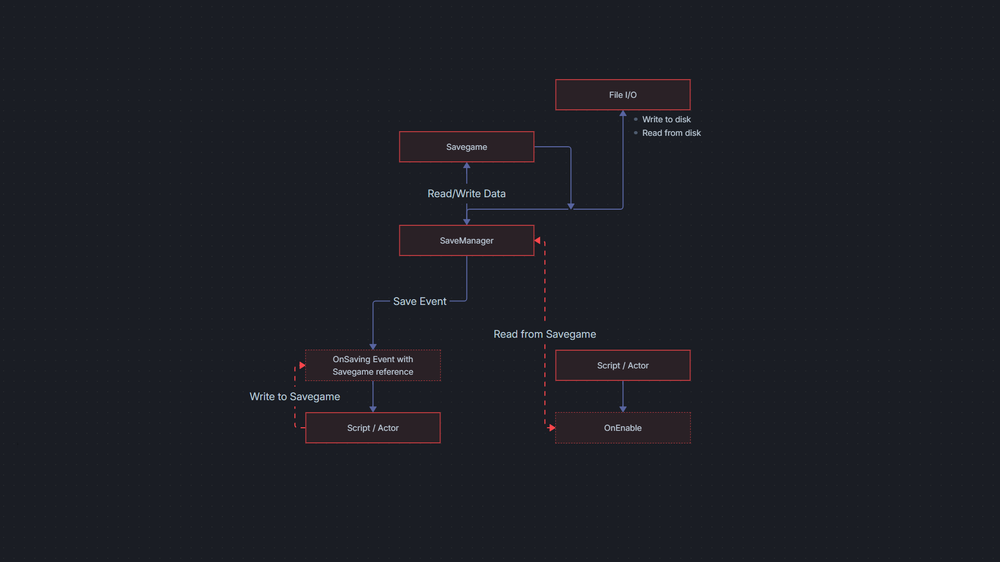

Welcome to FlaxSave

Welcome to FlaxSave - A modular, component based save system for the Flax Engine
This system is designed to provide a high performance, multi-threaded save system, that stays out of you way and keeps your gameplay smooth.
How it works

The FlaxSave system is designed to be Plug&Play. Once the plugin is added to your project, a global instance of the SaveManager is automatically instantiated before any scene is loaded, ensuring that the save infrastructure is always ready.
1. Initialization (Startup Phase)
As soon as your game starts, the SaveManager performs two critical tasks to ensure a smooth user (you) experience.
- Metadata Detection The system scans the save directory and collects every available
SaveMeta. This allows your games UI to display save slots instantly, without any hiccups. - Global Configuration The system loads all registered
ISavableAssets. This ensures that global configuration, like graphics, keybinds, audio, etc, are applied before the player even reaches the main menu.
2. Save Process
When a save is requested via RequestGameSave, the system initiates a Data Collection Phase:
- Background Dispatch The
OnSavingevent is dispatched on a background thread. This ensures that the serialisation of hundreds of objects doesn't cause any stutter during gameplay. - Data Collection Every subscribed persistable object (scripts and actors) write their data into the shared
Dictionary<Guid, string>, provided via theOnSavingevent - Finalization Once the data is collected, the
SaveManagerwrites the data to disk and creates a newSaveMetaentry
3. Load Process
When a game load is requested via RequestGameLoad, the system works in the background, until the save data ready for processing:
- Asynchronouse Read The requested file is read from disk in the background
- Notification Once the data is ready in memory, the
OnLoadedevent is dispatched for further loading operations, like scene loading - Data Distribution Persistable objects retrieve their specific data using
GetSaveDataduring their initilization (i.e.OnEnabled,OnStart)
Best Practices & Safety
Thread & Scene Safety
Since data collection happens in a background thread, never modify the scene via the OnSaving event. Treat your objects as Read-Only. Modifying actor properties or spawning object will be rejected by the engine.
- UI & Scene Updates For UI notifications or scene transitions, use the main-thread safe callbacks
OnSaved,OnLoadedandOnDeleted. - Convenience For one-off tasks, like closing a menu after save or loading scenes after load, use the invoke helpers
InvokeOnSaved,InvokeOnLoadedandInvokeOnDeleted. - ID-Based Save data is indexed by a
Guid. For scripts and actors, the build-inIDproperty is the most reliable way to ensure data maps back to the correct object. These ids are unique (yes, for spawned prefabs, too), persistent and handled automatically by Flax.